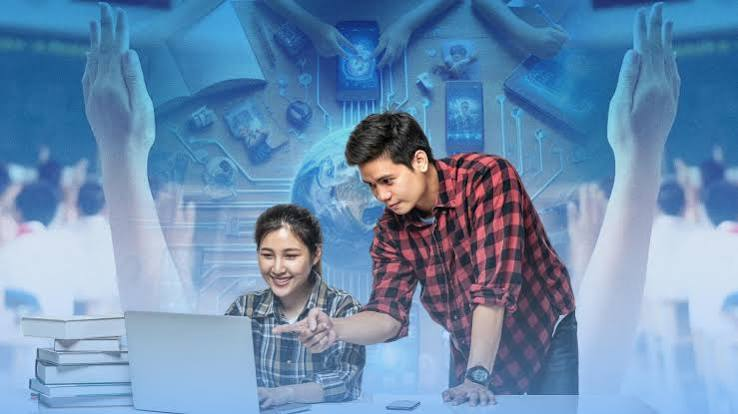
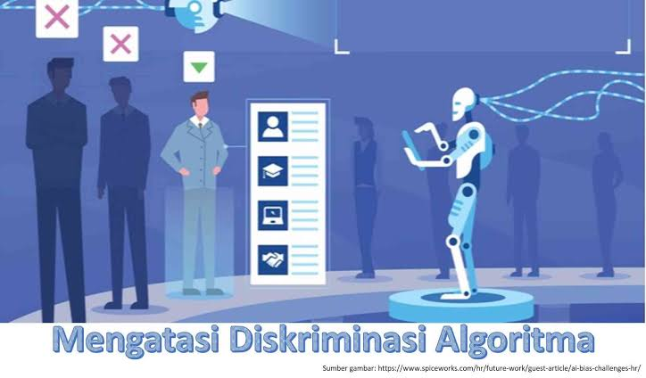

Kecerdasan Buatan dan robotik menjanjikan efisiensi luar biasa, namun juga membawa tantangan sosial yang mendalam. Bagaimana kita menyikapinya?
Transformasi digital mengubah cara manusia bekerja, berinteraksi, dan hidup secara fundamental.
Sistem komputer yang mampu belajar, bernalar, dan membuat keputusan layaknya manusia untuk menyelesaikan masalah kompleks.
Gabungan mesin otonom dan sensor canggih yang mengambil alih tugas fisik di industri, kesehatan, hingga rumah tangga.
Dua sisi mata uang: peluang emas dan tantangan nyata bagi tatanan sosial di masa depan.
Automasi mempercepat proses industri dan memangkas waktu pengerjaan tugas repetitif.
Diagnosis medis lebih akurat, penemuan obat lebih cepat, dan perawatan kesehatan menjangkau area terpencil.
AI memungkinkan metode belajar adaptif yang disesuaikan dengan kecepatan pemahaman tiap individu.

Banyak pekerjaan konvensional terancam tergantikan oleh mesin dan algoritma cerdas.
Ketergantungan pada perangkat digital berisiko mengurangi empati dan kedekatan emosional antarmanusia.
Pengumpulan data masif memicu ancaman privasi serta potensi diskriminasi akibat bias pada sistem AI.

Mengukur tingkat adaptasi AI di industri dibandingkan dengan eskalasi kekhawatiran masyarakat terhadap privasi dan lapangan kerja.
Langkah bijak agar teknologi melayani kemanusiaan, bukan sebaliknya.
Mempersiapkan tenaga kerja dengan keterampilan baru yang relevan dengan era digital dan teknologi canggih.
Pemerintah perlu menetapkan kebijakan etis penggunaan AI demi melindungi hak-hak privasi dan keamanan masyarakat.
Memastikan bahwa inovasi teknologi selalu berorientasi pada peningkatan kualitas hidup dan kesejahteraan manusia.